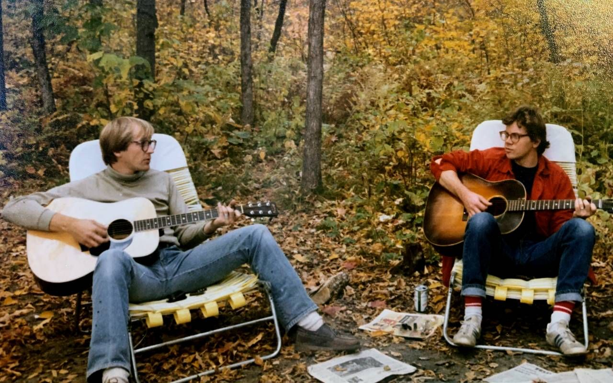

"Where your journey to mastery begins."
Home
Shop
Contact
Guide
GUIDE
Step 1 : Learn these open chords: Dm, Em, Am.
Step 2 : Learn a couple of strumming patterns: steady downbeats, then down-up patterns.
Step 3 : Play with backing tracks / jam with others.

We also run classes for beginners, if intrested you can contact us.